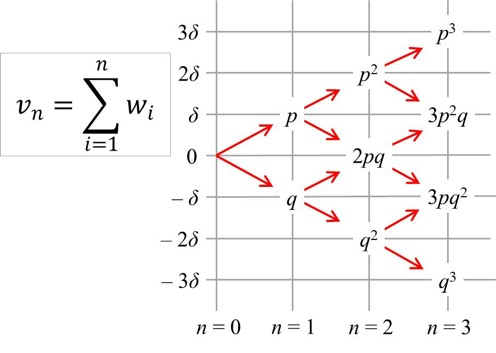

Modelos estocásticos de precios¶
34:29 min | Ultima modificación: Marzo 21, 2021 | YouTube
Medidas de cambio en el precio de un activo.¶
Cambio Absoluto \({(D_t)}\) :
Rentabilidad bruta simple:
Rentabilidad neta simple:
Rentabilidad logarítmica:
\[r_t = \log (P_t / P_{t-1}) = log(1+R_t)\]
[1]:
import warnings
warnings.filterwarnings("ignore")
import matplotlib.pyplot as plt
import numpy as np
import pandas as pd
import seaborn as sns
import statsmodels.api as sm
[2]:
#
# Lectura de datos
#
yt = pd.read_csv(
"https://raw.githubusercontent.com/jdvelasq/datalabs/master/datasets/trm.csv",
).yt
T = len(yt)
# Cambio absoluto
Dt = yt.diff(periods=1)
rt = [yt[t] / yt[t - 1] for t in range(1, T)]
rt = [0] + [np.log(v) if v != np.float64(1) else 0.0 for v in rt]
fig = plt.figure(figsize=(12, 8))
ax = fig.add_subplot(311)
plt.plot(yt)
ax = fig.add_subplot(312)
plt.plot(Dt)
ax = fig.add_subplot(313)
plt.plot(rt, "r")
plt.show()
El análisis de la distribución de probabilidades de los rendimientos es fundamental en el modelado de precios:
Describe la probabilidad de que un rendimiento tome un valor determinado.
Crea un punto de referencia del comportamiento de un mercado.
Permite evaluar modelos de precios contra el punto de referencia.
Permite comparar modelos.
Modelo general de precios de un activo¶
Existen componentes deterministicas en la estructura de los precios:
donde:
\(P_t\) es el precio; puede ser reemplazado por \(p_t = \log(P_t)\).
\(f(t)\) es la componente determinística que incluye tendencia, ciclos de largo plazo, efectos calendario, etc.
\(x_t\) es un proceso estocástico continuo
Modelo de paseo aleatorio con estados discretos¶
Sea \(n\) la cantidad de pasos dados por una partícula en una unidad de tiempo y \(v_n\) la distancia total recorrida. Cada paso tiene una longitud \(\delta\) y probabilidades \(p\) y \(q\) (con \(p\) + \(q\) = 1) de que sea positivo (hacia arriba) o negativo respectivamente.

La distancia recorrida por la partícula en una unidad de tiempo será:
y la varianza:
Por el Teorema del Límite Central, si \(u\) = \(v_n\), entonces \(u\) tiende a una distribución normal con media \(\mu\) y varianza \(\sigma^2\).
Paseo aleatorio continuo¶
Si:
\(F\) es una distribución cualquiera con media \(\mu\) y varianza \(\sigma^2\).
\(u_i\) es un valor muestral obtenido de \(F\).
\(x_0\) es un punto inicial arbitrario.
entonces la secuencia \(x_0, ~x_1, ...\) es un paseo aleatorio con pasos \(u_i\). En este caso, \(x_t = x_0 + u_1 + ...+ u_t\).
En este caso:
\(\mu\) es la deriva (drift).
\(\sigma\) es la volatilidad (desviación estándar).
Proceso Browniano con deriva o proceso de Wiener¶
Se define cuando en la secuencia \(x_0,~x_1,~x_2,...\):
Simulación¶
Ejercicio.– Grafique una realización de este proceso con \(T = 200\), \(\mu = 0\) y \(\sigma = 0.1\).
Ejercicio.– Grafique una realización de este proceso con \(T\) = 200, \(\mu\) = 0.5 y \(\sigma\) = 0.1.
Pronóstico¶
Ejercicio.– Para los dos ejercicios anteriores, haga el pronóstico para \(t\) = 100 y grafique los intervalos de confianza para una desviación estándar.
Estimación y diagnóstico.¶
Ejercicio.– Explique como se estiman los parámetros.
Ejercicio.– Explique como se diagnostica el modelo y ejemplifique.
Proceso Browniano estándar¶
Es un proceso de Wiener con \(\mu = 0\) y \(\sigma = 1\). En este caso:
y \(z_t\) sigue una distribución normal estandar.
Proceso Browniano con tendencia¶
Modelo continuo:
Modelo discreto:
Interpretación: Si \(x_t=P_t\), entonces: \(x_t-x_{t-1}=P_t-P_{t-1}=D_t\) ~ \(N[μ,σ^2 ]\)
[6]:
T = 600
P = rep(0, T)
for(t in 2:T)
{
P[t] = P[t-1] + 0.01667 + 0.2887 * rnorm(1)
}
## pronostico e intervalos de confianza
F = rep(0, T); U = rep(0, T); L = rep(0, T)
H = 300
F[H] = L[H] = U[H] = P[H]
for(t in 1:300)
{
F[H+t] = F[H] + 0.01667 * t
L[H+t] = F[H] + 0.01667 * t + 0.2887 * sqrt(t)
U[H+t] = F[H] + 0.01667 * t - 0.2887 * sqrt(t)
}
## Grafico
plot(P, type='l', lwd = 2, col = 'black', xlab = 't',
ylab = 'P[t]', ylim = c(min(P, L[T]), max(P, U[T])))
lines(x = H:T, y = F[H:T], type = 'l', lwd = 2, col = 'red' )
lines(x = H:T, y = L[H:T], type = 'l', lwd = 2, col = 'red' )
lines(x = H:T, y = U[H:T], type = 'l', lwd = 2, col = 'red' )
grid()
Simulación¶
Ejercicio.– Grafique una realización de este proceso con \(x_0\) = 5, \(T\) = 200, \(\mu\) = 0.4 y \(\sigma\) = 0.1.
### Pronostico \(h\) periodos adelante
\(x_{t+h}-x_t=(x_{t+h}-x_{t+h-1} )+⋯+(x_{t+1}-x_t )=\) $:nbsphinx-math:sum{i=1}^{h} D{t+i} $
\(x_{t+h}-x_t\) ~ \(N[μh,σ^2 h]\)
\(x_{t+h}=x_t+μh+σε_{t+h} \sqrt{h}\)
Ejercicio.– Grafique el pronóstico a partir de \(t\) = 100, y los intervalos de confianza para una desviación estándar.
Estimación y diagnóstico¶
Describa como se estima el modelo y como se diagnostica.
Proceso Browniano geométrico o exponencial¶
Ejercicio.— Simule una serie con T = 200.
Ejercicio.— Grafique el pronóstico para \(t\) = 100.
Ejercicio.— Explique como se estiman los parámetros y como se diagnostica.
Proceso de Orstein-Uhlenbeck o reversión a la media¶
Ejercicio.– Simule una serie con T = 200.
Ejercicio.– Grafique el pronóstico para \(t\) = 100.
Ejercicio.– Explique como se estiman los parámetros y se dianostica.